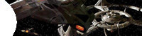
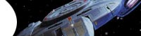
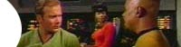
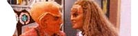
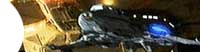

|


|
Acervo O
que se leva desta vida... 
chegado o momento de dizer adeus...
A hora mais sombria de Sisko
A melhor das temporadas Que
entre o Klingon! Uma nova nave e
um novo inimigo  As
comdias de DS9, Parte II  As
comdias de DS9, Parte I  Ben
Sisko: Pai, Emissrio e Soldado
fcil ser santo no paraso... Final
fcil ser santo no paraso... Parte IV
fcil ser santo no paraso... Parte III fcil ser
santo no paraso... Parte II
fcil ser santo no paraso... Parte I  |
 Nosso
colunista apresenta a quarta temporada de DS9. Leia
mais
Nosso
colunista apresenta a quarta temporada de DS9. Leia
mais